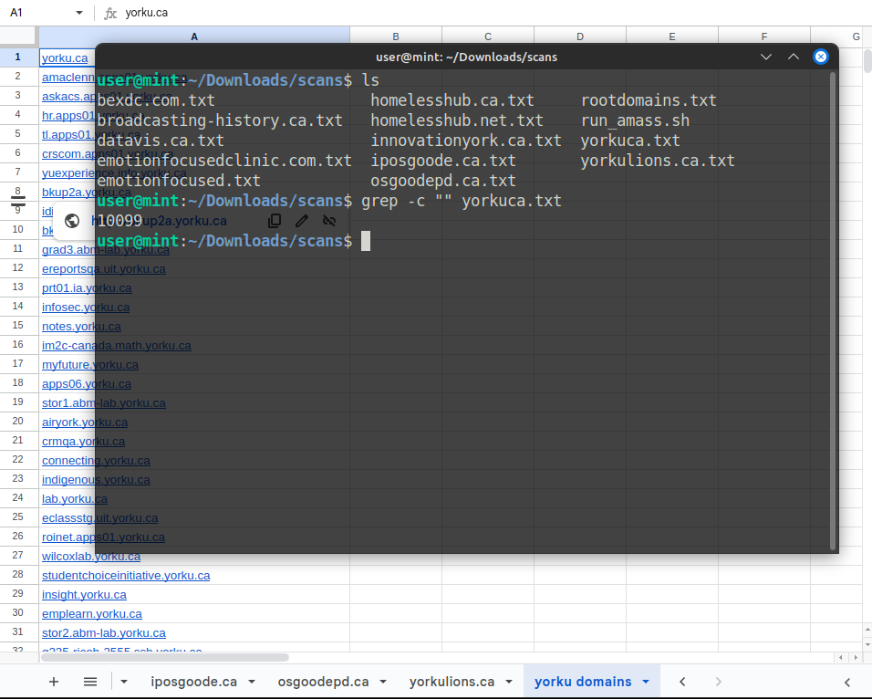
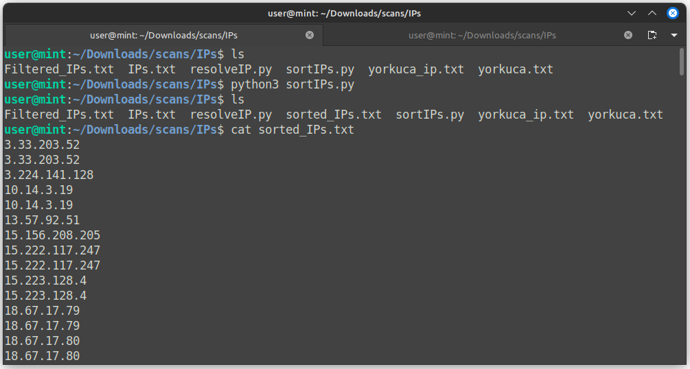
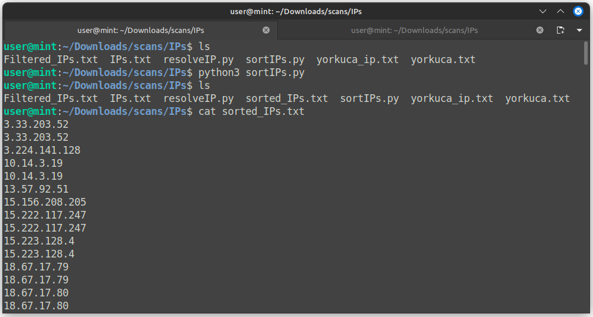
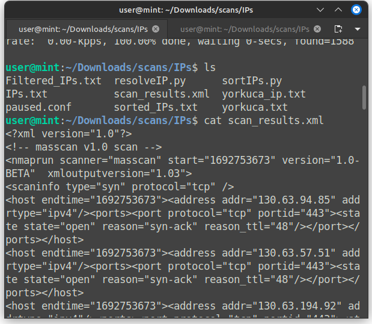

What is masscan?
Enumerating data from large networks can be very daunting. The masscan tool is a high-speed network scanner which is specifically designed to quickly identify open ports and collect information about the systems and services running on those ports. The speed and efficiency of this tool makes it great for enumerating larger networks.
Running masscan on a large set of IP addresses
Recently I've been working on some security research for my university. One of the things I focused on in particular was attempting to collect all of my university's public facing hosts. Using tools like whois, amass, etc, I managed to find a couple root domains and enumerate their subdomains. I ended up with a huge number of subdomains, with more than 10,000 total subdomains under yorku.ca.

I can't run masscan with domain names as inputs, as it only takes the IP addresses. I'm going to have to compile a list similar to yorkuca.txt which consists of every resolved IP address instead every subdomain.
I can write a simple Python script using the socket library, which can allow me to communicate over network protocols through Python.

In the script above, the program gathers every domain from our domain list, resolves each IP address, saves each IP address to a new file, and outputs the domain names and their respective IP addresses.

When I run my script, it actively resolves every IP address and writes it a new file. Now that I have a huge list of IPs, I need to sort all of them out.
Inevitably some of the IPs couldn't be resolved, which would be listed as 'Cannot resolve IP for {domain}'. I can filter out certain strings using the grep terminal command.

For my project, I need to sort the IPs out. In the above screenshot, every IP appears to have the same host portion, being 130.63.xx.xx, but there are other different higher level host portions as well such as 3.33.xx.xx, 18.67.xx.xx, etc.
So am IP address is made up of a set of four octets, taking a form of xx.xx.xx.xx where xx represents some kind of 8-bit binary number represented in decimal format.
To sort them out, I think converting each IP address to an integer would be good as it would allow me sort everything much more easily.
 

Now that I have a list of the sorted IPs, I can run masscan on each IP address.
The common port numbers for various services such as http, ssh, rdp, etc include 22, 80, 111, 389, 443, 445, 636, 2049, 3389, 8080, and 8443. I'll run a masscan for these ports on my sorted IP list.


By the end of our scan, we got a structured XML file containing information about each port. Our XML file contains each IP address, along with it's open ports and protocols.